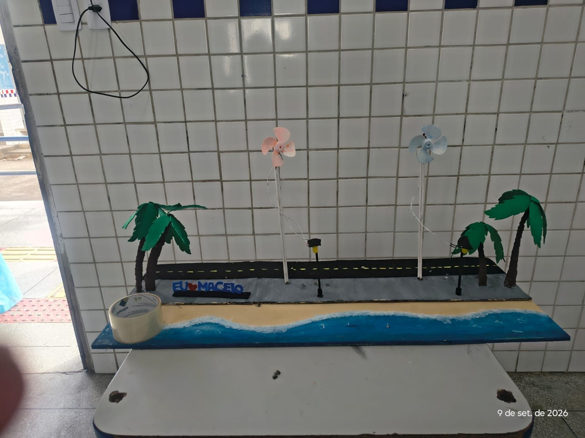

Energia eólica na orla de Maceió
O experimento demonstrou como a energia eólica pode ser aproveitada em Alagoas. Ela é produzida pela força dos ventos, que movimentam as pás das turbinas e acionam um gerador, transformando energia mecânica em elétrica.
Essa fonte é renovável, pois utiliza o vento como recurso natural e não libera diretamente gases poluentes durante a geração de eletricidade. O projeto mostrou como essa energia pode contribuir para a iluminação pública e para um futuro mais sustentável, desde que existam condições adequadas para sua instalação.